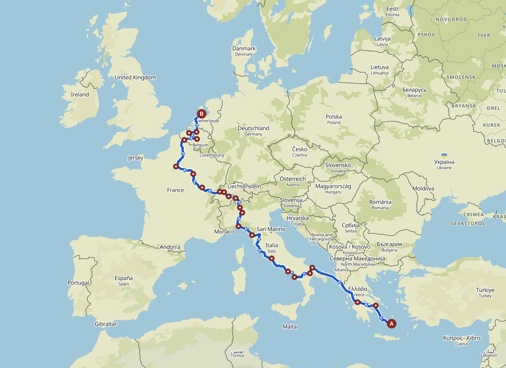
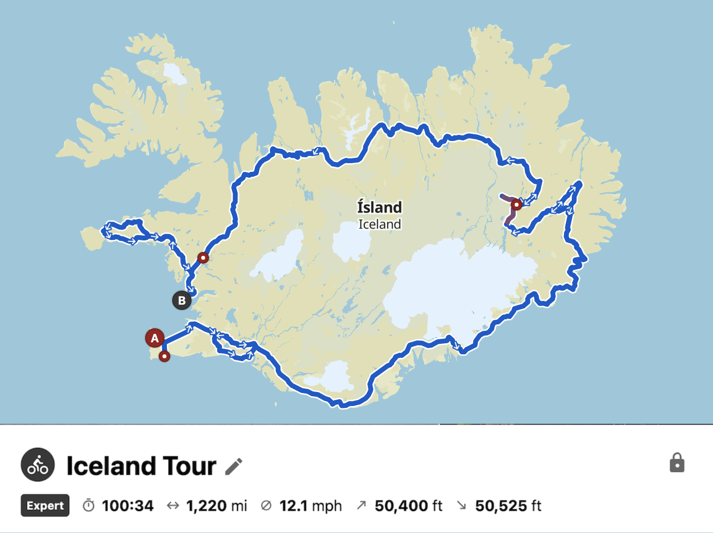
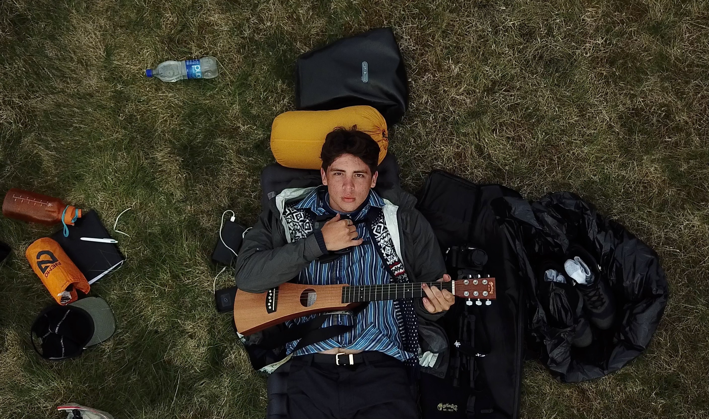

Creative

Film
I had never realized the pattern till I was working on my first major film project, but since young, I had been making short videos covering my family’s travels. On iMovie, I would cronologically stitch together short clips and photos which were taken through the duration of the trip then I would add my favorite song as the backing track. This small hobby would then begin to grow and propel me across several countries and breathed a desire to create film with the sole interest of creating a project which I would personally watch and be proud of.
Europe Bicycle Tour
Having picked up the hobby of cycling from recently completing an Ironman triathlon, I had the desire to continue cycling but to also strive for a different goal. For this reason, I chose to cycle across the content of Europe while also combining my other passions for music and video production to produce my first major film project. As I worked on this project, my skills within video editing exponentially grew, and by the end, I began to realize how much I wished I had done differently.
Iceland Bicycle Tour
Having been unsatisfied with the quality of music, film, and story in my Europe documentary, I was determined to work on a second similar project. For this reason, I embarked on a bicycle tour around the Ring Road of Iceland. For this project, I wanted to put more intention into each shot, give a reason and feeling for each song in the film score, and try to portray the feeling of isolation and withdrawal. I’ve seen a major improvement towards the direction where I want to take my film production but it has also become evident how much more room I have to grow.
Music
My love for instruments and music had started early in life. Though I was not raised in a musical household, I was fortunate enough to have been exposed to guitar by the early age of eight and this sprung me into a life in which there is not a day where I don’t pick up an instrument. For several years I would play in my Spanish church’s band and over time, my taste in music became more refined. I began to lean towards music which fit my personality and I found most pleasure when listening to music which created a sense of slowness but also allowed for there to be a show of strong emotion. Now, when I produce my own music, I am motivated by the same thing which motivates me when producing a film. I desire to create an honest piece of work which portrays the same feelings I enjoy viewing or hearing just for the sake of creating something with quality and intention.
Guitar
After having started to play guitar at an early age, I bounced between several genres which emphasized guitar. This took me through discovering different rock and indie artists, attempting fingerstyle guitar, but ultimately sticking to blues. Due to the variety of genres I have experienced playing, I developed a deep respect towards artists who form their own recognizable style because I have come to understand the amount of creativity which is required to do so.
Piano
 I have a particular draw towards the piano since I see it as being a more suited avenue for tapping into certain emotions which are out of reach from the guitar. Only up until recently, I haven’t ever had reliable access to a piano, but in the past, this would not withhold me from spending a large amount of time on the bench of any piano I would come across. Over time, I was able to notice patterns and began to create my own pieces of music of which I would use as the film score for the Iceland film.
I have a particular draw towards the piano since I see it as being a more suited avenue for tapping into certain emotions which are out of reach from the guitar. Only up until recently, I haven’t ever had reliable access to a piano, but in the past, this would not withhold me from spending a large amount of time on the bench of any piano I would come across. Over time, I was able to notice patterns and began to create my own pieces of music of which I would use as the film score for the Iceland film.